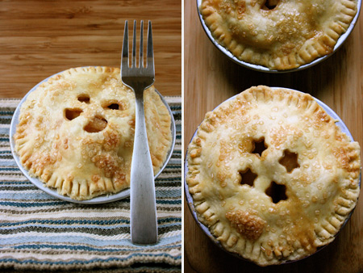

Mini Apple Pies

These are easy. The hardest part about them is making the dough, so they’re a breeze for people who are used to pastries and a good practice item for people who aren’t. I kept the seasoning here very simple – sugar, cinnamon, and a wee bit of lemon juice. That’s it. If you have two apples and some flour, you can make these right now. The only limiting factor might be the mini pans, but this will easily become a full size pie if you use all of the dough and cut up a few more apples.
They are a little on the tart side, so if you prefer very sweet pies add some extra sugar. The crust is unbelievably flaky and buttery-tasting, thanks to earth balance and Martha Stewart, since I adapted her pate brise recipe. See below for the recipe and pictures!
Miniature Apple Pies
Makes four
2 Granny Smith Apples, peeled and chopped (see below)
1 tsp Fresh Lemon Juice
1 Tbs Sugar + more for sanding
1/2 tsp Cinnamon
1/2 Recipe Pate Brise
3 Tbs Soymilk
Pate Brisee
2 1/2 Cups Flour
1 Cup Earth Balance
1 tsp Sugar
1 tsp Salt
1/4 Cup + Cold Water
Prepare the dough, divide in half and flatten into discs. Cover each disc in plastic wrap and chill for 1 hour. (Directions and pictures here)
Preheat the oven to 400ºF. Peel the apples. Quarter each apple and remove the core from each slice. Cut each quarter in half, and in half again (making four slices from each quarter. Cut these slices in half again, crosswise this time, to shorten them. Place cut apples in a bowl.
Coat apples in lemon juice, then add sugar and cinnamon and mix well. Set aside.
Roll out your disc of pate brisee onto lightly floured parchment paper. You want to hit about 1/4 inch, but it’s not a big deal. Find something roughly 5″ in diameter to with which to cut circles of dough – it can be a small bowl, the top of a vase or a large beer mug, the pastic containers you get a grocery store in the bulk section, a cookie cutter – anything. Cut out 4 circles, and roll each circle out, one at a time, until about 1/8″ thick and large enough to fill the bottom of your pie pans.
 Gently place the dough into the mini pans and flatten it out as much as you can. You want the dough to hang over the edges just a bit. Fill each pie with apples, as compact as you can, since they’ll cook down in the oven. Use all the apples, even if you have to make them into a mound in order to fit them.
Gently place the dough into the mini pans and flatten it out as much as you can. You want the dough to hang over the edges just a bit. Fill each pie with apples, as compact as you can, since they’ll cook down in the oven. Use all the apples, even if you have to make them into a mound in order to fit them.
 Cut out 4 more dough circles, rolling each out individually to reach the final thickness. Use a small cookie cutter (or anything, really) to make cute vents, or even just make small slashes witha knife. Place on top of the apples, pressing down with your thumbs to seal. Use a fork to crimp the edges.
Cut out 4 more dough circles, rolling each out individually to reach the final thickness. Use a small cookie cutter (or anything, really) to make cute vents, or even just make small slashes witha knife. Place on top of the apples, pressing down with your thumbs to seal. Use a fork to crimp the edges.
 Add a few dribbles of lemon juice to the soy milk to curdle it (it shouldn’t taste overly sour, though). With your fingers or a pastry brush, coat the top of each pie. Sand the tops of the pie with a coarse sugar. Regular sugar works fine, though!
Add a few dribbles of lemon juice to the soy milk to curdle it (it shouldn’t taste overly sour, though). With your fingers or a pastry brush, coat the top of each pie. Sand the tops of the pie with a coarse sugar. Regular sugar works fine, though!
Place pies on a cookie sheet and place in the oven, turning temperature down to 350ºF. Bake for 30-35 minutes until golden brown. Allow to cool before serving.

Your pies look great. I just got into pie baking myself in the last few months, and I’m still waiting for a pie of mine to have that sleek “professional” look- but they taste good in the meantime!
Your food photos and tutorials are amazing! I’m so in awe of your ability to easily detail a specific process. You make it all so accessible. I’m sure there are a lot of non-vegans who find your blog by accident and find themselves learning about veganism in the process. Thank you and keep up the excellent work!
Thanks Bazu! Pies are a weird combination of simple and complicated, but they’re always tasty. :)
Vegyogini – Thank you so much! I really appreciate you taking the time to not only read my blog. Your comment is so sweet, I think I’m blushing!
Aloha Lolo!
I adore your blog! I am glad to have found your site. Your mini donut post inspired me to eBay some donut pans – I am currently eagerly awaiting their arrival :-) And I second Vegyogini’s comments above – you do a great job with your posts. I look forward to being an avid reader.
Very nice. I’ve just recently found your blog from Vegan Cupcakes Take Over the World. Although I’m no longer strictly vegan, I always get a kick out of new recipes.
Great blog!
What a great idea and certainly the right time of year for apples! Any time of year, that is. :)
Thanks Edu Dame – I hope your donut pans treat you well!
Deb – Thanks for coming by!
Cherie – Thanks, apples are certainly dependable!
All your pie pictures are making me want some. Is it 1/2 cup or 1 cup of “butter”, though? On the cherry pie, it says 1 cup, here it says half.. Also, do you think shortening would taste alright instead of butter, or is that going to throw it off? Earth Balance is out of my price range.. I could use regular margarine but it will require a trip to the store, which I’m trying to avoid :)
OOh, thanks for catching that! It’s 1 cup of earth balance, and I edited it to be correct.
I think that shortening would probably be just fine. Maybe add a pinch of salt to make up for the salt that would be in the earth balance? I think it’ll be okay, though! Let me know. :)
I am a little confused about the amount of Earth Balance you use in the crust. In this post, you state you need 1/2 cup. But in the cherry pie recipe, it says 1 full cup. Which quantity is correct.
And by the way, your food looks awesome!
what a great work
im so happy to visit your blog.
ooh these look delicious! i’ll have to try some of these
Again…I’m hungry and I LOVE apply pie…I think I will try this recipe soon. Thank you for sharing!
would this recipe work with other fruits
My dough went ugly! man you wernt lying when you said that dough is tricky…I have to now take it to a potluck…oh the humiliation! thanks for the recipe though, i will have to try again…sometime NOT for a potluck
where do you find mini pie tins? the only ones i can find are non stick and teflon frightens me.
nevermind i found a site. if anyone else needs it:
http://www.preparedpantry.com/browseproducts/Mini-Pie-Pan-Set.html
I am a great fan of your recipes and this is one of my favourites!!!!
i was just wondering how you would go about baking the mini pies if they have been frozen? Do u thaw them out first or stick them in frozen to cook?
i dint know if i did something wrong but the crust was bland idk but with whip cream theyre good
Just stumbled upon your blogsite and it’s great. Am gonna try these pies tomorrow. Wish me luck :)
I love your blog. And I hope to make these some day soon :)
thanks for all the great recipes! I will convince my mom to get me your book!